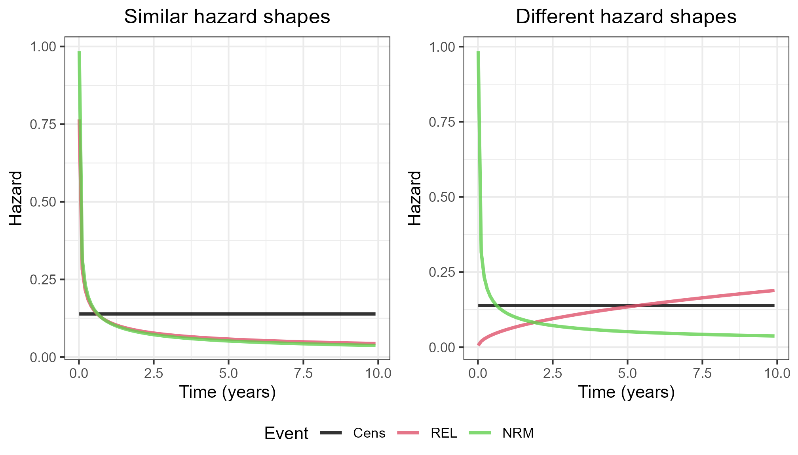
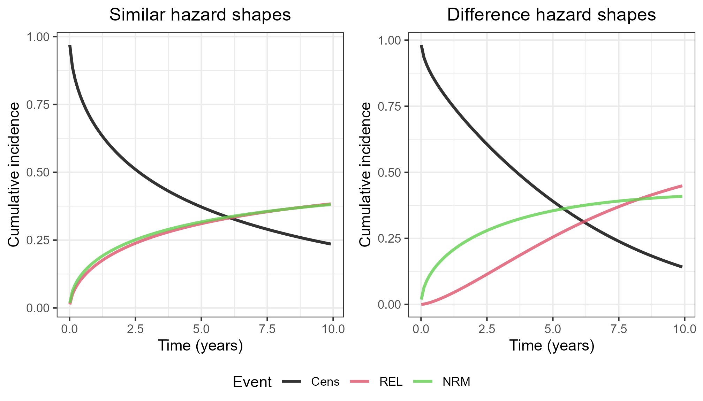
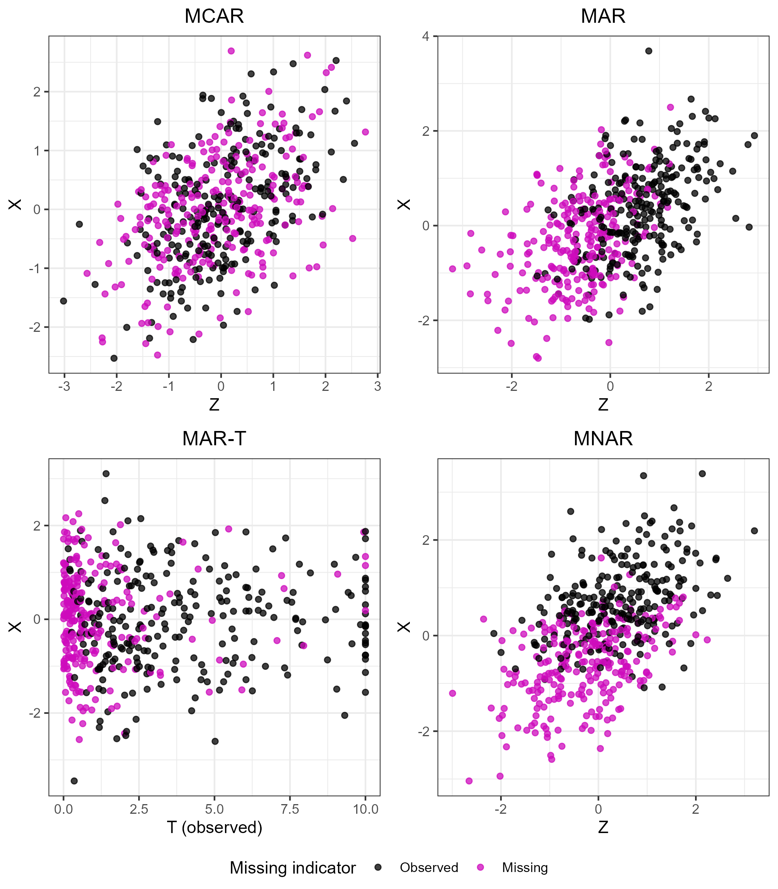
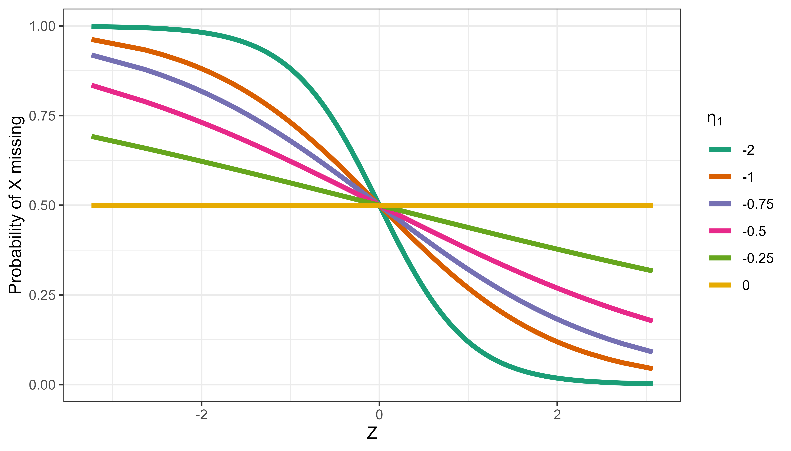
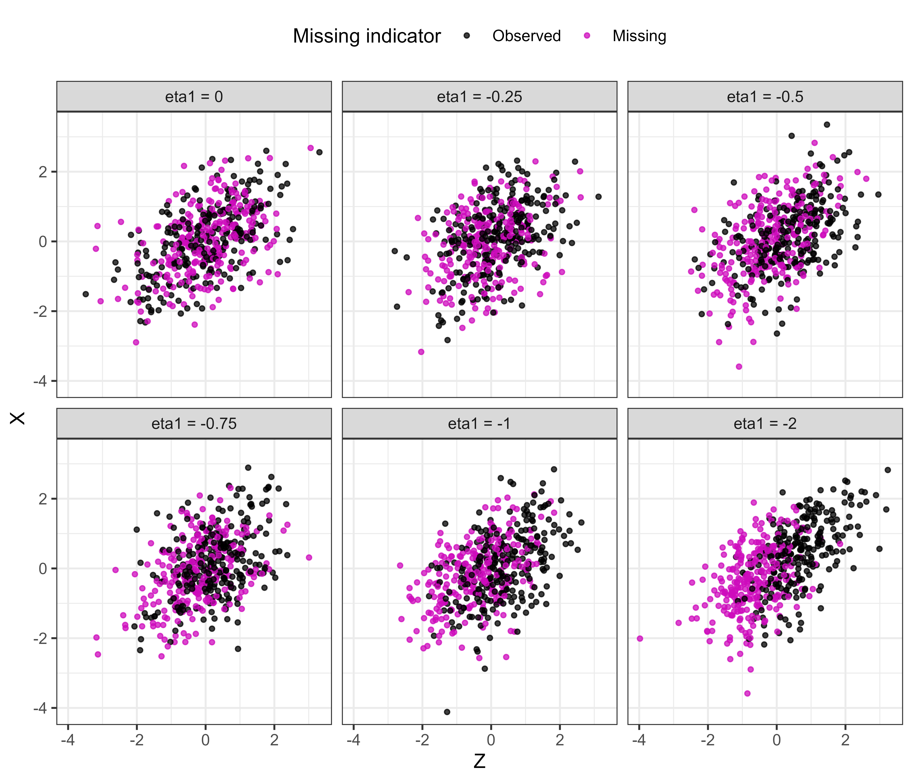

data-generation.RmdPlease refer to the main paper for introduction of the notation. Given standard normal \(Z\) and a standard normal or binary \(X\), event times were generated using the following latent parametrisation:
\[\begin{align*} T_1 &\sim \text{Weibull}(\kappa_1, \lambda_1 = \lambda_{10}e^{\beta_1 X + \gamma_1 Z}), \\ T_2 &\sim \text{Weibull}(\kappa_2, \lambda_2 = \lambda_{20}e^{\beta_2 X + \gamma_2 Z}), \\ C &\sim \text{Exp}(\lambda_C), \end{align*}\] where \(\text{Weibull}(\cdot)\) is a Weibull distribution with hazard \(h(t) = \lambda\kappa t^{\kappa -1}\), with \(\kappa\) and \(\lambda\) the shape and rate parameters respecitively. We varied \(\beta_1 = \{0, 0.5, 1\}\), and fixed \(\gamma_1 = 1\), \(\beta_2 = 0.5\) and \(\gamma_2 = 0.5\). The censoring rate was also fixed at \(\lambda_C = 0.14\).
Concerning the baseline hazard shapes, there were two parametrisations: ‘similar’ and ‘different’:
Similar, \(\{\kappa_1,\lambda_{10},\kappa_2,\lambda_{20}\} = \{0.58,0.19,0.53,0.21\}\)
Different, \(\{\kappa_1,\lambda_{10},\kappa_2,\lambda_{20}\} = \{1.5,0.04,0.53,0.21\}\)
The figures below visualise the baseline hazards, as well as the corresponding baseline cumulative incidences.


As defined in section 5.1 of the main paper, \(R_X\) denotes whether elements of \(X\) are fully observed (\(R_X = 1\)) or missing (\(R_X = 0\)). There were four different missingness mechanisms for \(X\):
Setting \(\eta_1 = -2\) and solving for \(\eta_0\) such that the average probability of missingness was 50%, we can visualise each of the mechanisms as follows:

The \(\eta_1\) values represents the strength of the mechanism. Using the MAR mechanism as an example, we can visualise the effect of changing \(\eta_1\) while fixing the proportion of missing values at 50% as follows.
In term of probability of \(X\) missing as a function of \(Z\):

With the data itself:
